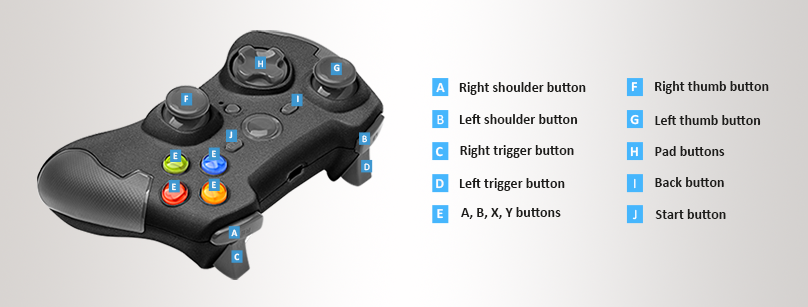
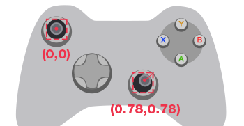
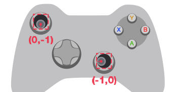

ゲームパッド
初級 プログラマー
ゲームパッド (Xbox Elite ワイヤレス コントローラー、PS4 DualShock など) は、コンソールおよびデスクトップ用の一般的な入力デバイスです。
Note
現在、Stride は Xbox Elite ゲームパッド用に最適化されています。他のコントローラーも動作しますが、予期しないボタン マッピングになる場合があります。PS4 DualShock タッチパッドなどのゲームパッド固有の機能はサポートされません。
デジタル ボタンとアナログ ボタン
デジタル ボタンには、アップとダウンの 2 つの状態があります。D パッド、スタート、バック、サムスティック (押す)、A、B、X、Y の各ボタンはデジタル ボタンです。
アナログ ボタンは、ユーザーが押した強さに応じた値を返します。トリガーはアナログ ボタンであり、0 ～ 1 の範囲の値を返します。サムスティックはアナログ ボタンでもあり、X 軸および Y 軸の -1 ～ 1 の値を返します。
Xbox Elite コントローラーのボタンは、Stride では次のような名前になっています。

ゲームパッドの入力を処理する
ゲームパッドが接続されていることを確認する
ゲームパッドの入力を処理する前に:
いずれかのゲームパッドが接続されているかどうかを確認するには、InputManager.HasGamePad を使用します。
接続されているゲームパッドの数を確認するには、InputManager.GamePadCount を使用します。
現在のデバイスが切断されたかどうかを確認するには、InputManager.DeviceRemoved イベントを使用します。
デバイスが接続されたかどうかを確認するには、InputManager.DeviceAdded イベントを使用します。
デジタル ボタン
ゲームパッドのデジタル ボタンの状態および状態変化を問い合わせるには、GamePad オブジェクトで以下のメソッドを使用します。
| メソッド | 機能 |
|---|---|
| IsButtonDown(IGamePadDevice, GamePadButton) | ボタンが「押されている」状態かどうかを確認します。 |
| IsButtonPressed(IGamePadDevice, GamePadButton) | 前回の更新以降にユーザーがボタンを「押した」かどうかを確認します。 |
| IsButtonReleased(IGamePadDevice, GamePadButton) | 前回の更新以降にユーザーがボタンを「放した」かどうかを確認します。 |
ボタン (GamePadButton) は確認するゲームパッド ボタンです。
デジタル ボタンの状態は、GamePadState.Buttons を使用して取得することもできます。
Note
GamePadState.Buttons フィールドは、2 進法を使用するビットマスクです。ビットマスクの値に応じて、どのボタンがアップかダウンかを特定できます。
ゲームパッドの状態を取得するには、IGamePadDevice.State を使用します。
アナログ ボタン
アナログ ボタンの値を問い合わせるには、最初に GetGamePadByIndex(index) を使用してゲームパッドの現在の状態を取得します。index (整数) は、確認するゲームパッドのインデックスです。
Warning
IGamePadDevice.State によって返される値は、現在の更新でのゲームパッドの状態です。この値を次の更新に再使用することはできません。更新のたびに、再度問い合わせる必要があります。
トリガーとサムスティックの位置を取得するには、 GamePadState のフィールドを使用します。
| フィールド | 説明 |
|---|---|
| GamePadState.LeftThumb | 左サムスティックの X 軸/Y 軸の値です。どちらの軸も範囲は［-1.0f, 1.0f］です。 |
| GamePadState.RightThumb | 右サムスティックの X 軸/Y 軸の値です。どちらの軸も範囲は［-1.0f, 1.0f］です。 |
| GamePadState.LeftTrigger | 左トリガー アナログ コントロールの値です。1 つの軸の範囲は［0, 1.0f］です。 |
| GamePadState.RightTrigger | 右トリガー アナログ コントロールの値です。1 つの軸の範囲は［0, 1.0f］です。 |
サムスティックは、X 軸および Y 軸の方向に動きます。その位置は次のように表されます。
 
トリガーは X 軸の方向に動きます。その位置は次のように表されます。

振動
ゲームパッドの振動レベルを設定するには、IGamePadDevice.SetVibration を使用します。
Note
現在、Stride は Xbox ゲームパッドの振動のみをサポートします。
コード例
using Stride.Core.Mathematics;
using Stride.Engine;
public class TestScript : SyncScript
{
public override void Update()
{
// ゲームパッドが接続されているかどうかを確認する
if (Input.HasGamePad)
{
// 接続されているゲームパッドの数を取得する
int gamepadCount = Input.GamePadCount;
// ゲームパッドのステータスを確認する
foreach(var gamepad in Input.GamePads)
{
// アナログ サムスティックの位置を取得する
Vector2 speed = gamepad.State.LeftThumb;
Vector2 direction = gamepad.State.RightThumb;
// デジタル ボタンのステータスを取得する
if (gamepad.IsButtonDown(GamePadButton.X))
{
// ユーザーがボタンを押し続けている限り、アクションを繰り返す。
// これは、マシンガンの連射のような連続するアクションに利用できる。
}
if (gamepad.IsButtonPressed(GamePadButton.A))
{
// ユーザーがボタンを押し続けている場合であっても、アクションを 1 回だけトリガーする。
// これは、ジャンプのような 1 回限りのアクションに利用できる。
}
}
}
}
}